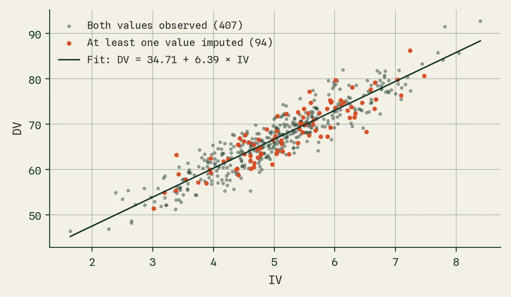

Regression with missing data
| Tools | R: dplyr, mice, alr3 |
|---|---|
| Data | 495 people with at least one value (501 IDs in the files) |
| Result | R² 0.85, and no evidence a straight line is the wrong shape |
The question
I had two files matched by ID, one holding an independent variable and one holding a dependent variable, and about 10% of each was missing. Can you still fit a line you can trust? And once you have it, is a straight line actually the right shape?
What I did
Merged without losing anyone. A full join on ID kept every person, even those missing one of the two values.
| Rows with | Count |
|---|---|
| Both values | 407 |
| Only IV | 45 |
| Only DV | 43 |
| Neither | 6 |
| Total IDs | 501 |
That's 9.8% of IV values and 10.2% of DV values missing. Dropping every incomplete row would have thrown away 88 people who had one of the two values.
Imputed instead of deleting. I used MICE with the norm.boot method, which fills each gap from a regression on the observed data with bootstrap resampling, so the filled values carry realistic noise instead of all sitting on one line. I made five imputations (m = 5) with a fixed seed. The completed data had a mean IV of 5.07 (SD 1.05) and a mean DV of 67.11 (SD 7.27).
Fit and checked the line. The fit was DV = 34.71 + 6.39 × IV, with a 95% interval for the slope of 6.15 to 6.63. Residuals were centered on zero with no pattern, and the QQ plot followed the line closely.
What I found

The relationship is strongly linear. IV explains 85% of the variance in DV (R² 0.849), and each one unit increase in IV goes with about 6.4 more in DV.
To check the shape, I ran a lack of fit test: group IV into 20 bins and ask whether the bin averages wander away from the line. While rerunning everything for this page, I found a bug in my original version. It built the bin means in bin order but left the DV values in row order, so it compared the wrong rows. The result I first reported, F = 1.30 with p = 0.18, came from that mismatch. With the rows lined up, the test gives F = 0.92 and p = 0.55. The conclusion doesn't change, there's no sign the line is the wrong shape, but now it holds for the right reason.
What I'd do next
- Pool all five imputations with Rubin's rules instead of fitting on the first one. I tried it for this page: the pooled slope is 6.40 against 6.39, so the answer holds, but pooling is the correct way to report it.
- Drop the six IDs with no values at all. MICE filled those in too, so the model ran on 501 rows when only 495 had anything observed.
- Compare against the 407 complete rows alone, to show what imputation changed.